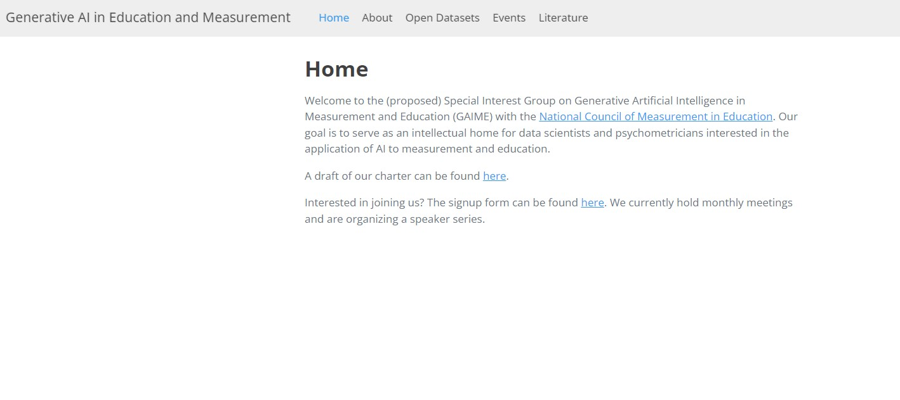
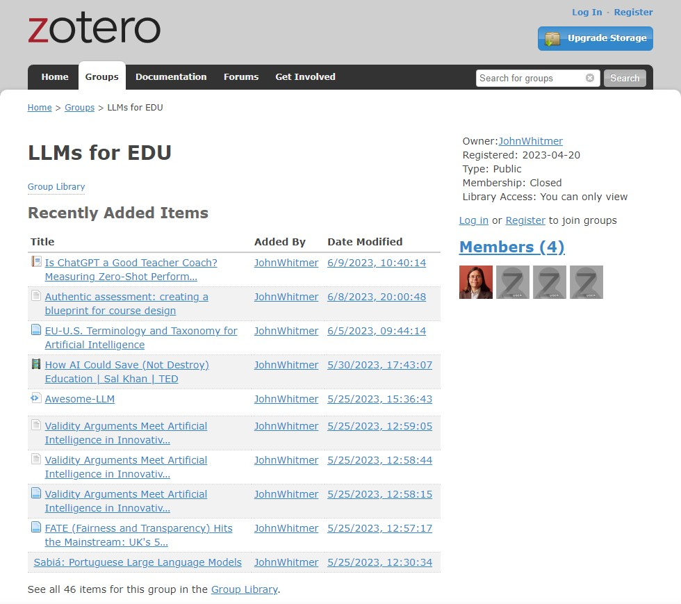

Artificial Intelligence in Measurement and Education
Introductions
Executive Board
Co-Chair: Chris Ormerod
Co-chair: John Whitmer
Secretary: Maggie Beiting-Parrish
Members in attendance
Introductions:
Name
Organization
What you can contribute and/or learn.
Meeting Norms
Punctuality & Agenda
Confidentiality of ideas and resources shared.
Attribution and credit for work
Collaboration and mutual support.
Overview of GAIME
Charter
We seek to create an intellectual home within NCME for researchers interested in:
Item Generation
Automated Scoring of open-ended Items
Formative Feedback
Update the Status
Executive committee has agreed to put the matter to the full board at the July 21 meeting. Summary of points raised:
How the GAIME SIGIMIE will be distinguished from the Big Data in Educational Measurement SIGIMIE.
How to leverage NCME website infrastructure.
Outline the Benefits
Coordinated Sessions, NCME resources, collaborations.
Brainstorm
Speaker Series
Foundational Research.
Measure service implementation.
Involving non-measurement industry.
Literature Review and Synthesis
Resarch project Collaborations
Promotion of Events and Resources
Dicussion
Initial Tools
Website
https://github.com/christopherormerod/gaime
awaiting NCME Approval for domain name

Initial Tools
Zotero Group :
https://www.zotero.org/groups/5034711/llms_for_edu

Initial Tools
- Github Repo :
https://github.com/christopherormerod/gaime-example-code
awaiting NCME Approval for domain
- OSF Project Site
Guidelines for Fair Use
We need clear guidelines moving forward regarding fair and appropriate use of generative AI:
Validity and Reliability
Fairness
Privacy and Security
Accountability and Transparency
See https://duolingo-papers.s3.amazonaws.com/other/DET+Responsible+AI+033123.pdf